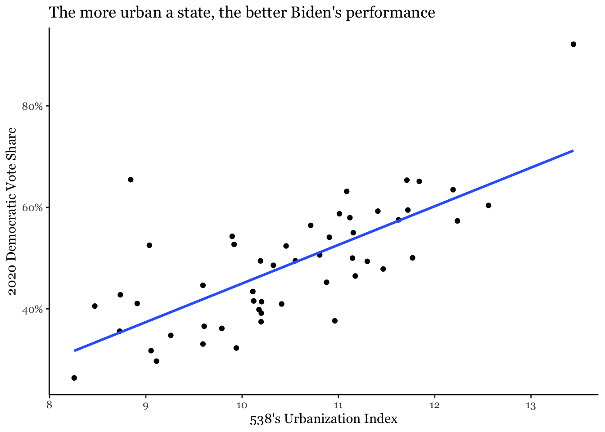
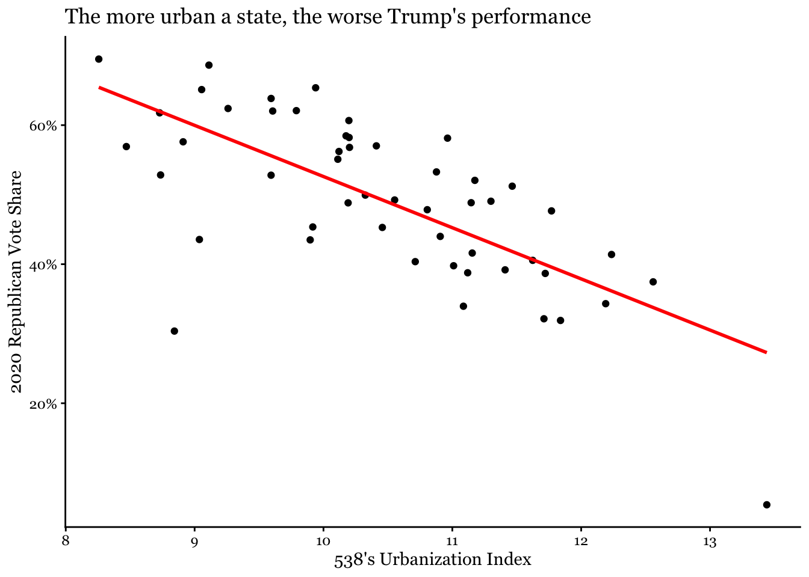
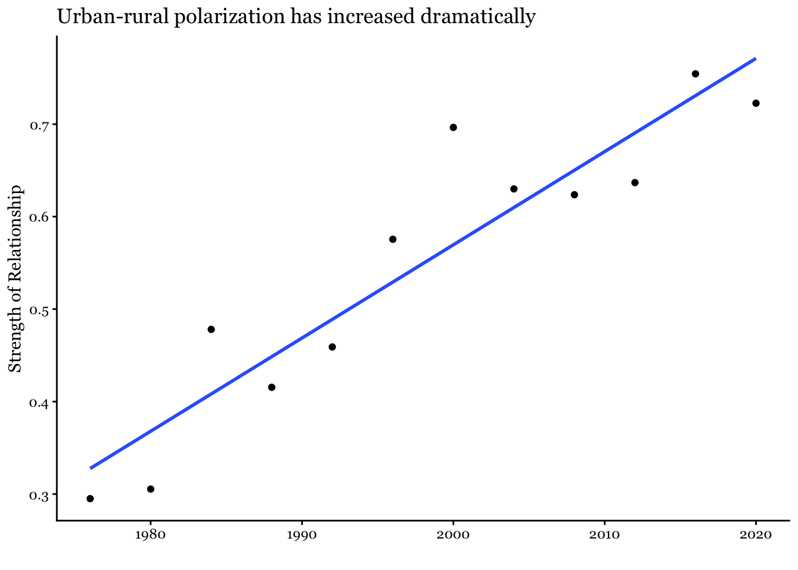

The Urban-Rural Divide in American Politics
Politics
Introduction
The polarization of American politics along geographic lines is well-publicized. Big cities are associated with the Democratic party and its liberal policies, whereas rural areas are considered right-wing and Republican. But are we actually as divided as we seem? And if so, how did we get here?
Exploratory Analysis
To answer these questions, I compared presidential election results, from MIT’s Election Data and Science Lab, to 538’s state urbanization index, calculated as the natural logarithm of the average number of people living within a five-mile radius of a given resident in each census tract in that state. This is a great dataset, because it is not sample data; it represents exactly what we are trying to study. Because of this, we can more confidently draw conclusions from analysis of the data. To start, let’s look at the most recent election. Here the conventional wisdom certainly holds up well.
In this graph, each dot is a state (or DC), and its position is determined by what percentage of the vote it gave to Joe Biden versus its urbanization score. The graph shows a pretty clear positive trend (r = 0.72); the more urban a state, the larger percentage of Democratic ballots, generally speaking. The only big outliers are Vermont, which despite being the fifth-most rural state gave Biden more than 65% of the vote, and DC, which is by far the most urban and most Democratic-leaning “state” (for the purposes of the electoral college). And since third parties are typically all but irrelevant, it’s unsurprising that the converse is true for Republican vote share, with nearly as strong of a negative relationship (r = -0.70).

The Bigger Picture
So we have a clear answer to our first question: the urban-rural divide is a very real phenomenon in today’s politics. The natural question, then, is how exactly this came about. To get a rough estimate, I calculated the r-values in a similar manner as above for each presidential election going back to 1976, the earliest year in the dataset. A higher r-value on the y-axis corresponds to a greater correlation between state urbanization and Democratic vote share in that year’s presidential election. Notably, this is an imperfect method because the urbanization index relies on data from the 2010 census. However, the numbers likely wouldn’t be that different. New York and New Jersey were still very urban fifty years ago, and Wyoming and Montana were (and are) almost entirely rural. Keeping this caveat in mind, the remarkable strength of the correlation (r = 0.93!) shown in the graph still tells a compelling story.

Evidently America’s geographic divide is a relatively recent phenomenon. Why might this be? The Democratic party has long been the party of the big cities, but for a long time it was also the party of the rural south. In the wake of the civil rights movement, that began to change, and by the new milennium, southern states were solidly Republican. And more recently, the suburbs, long a bastion of conservative politics, have begun to shift more towards Democrats, motivated in part by dislike of President Trump and his policies. So now it is possible to say that, with few exceptions, rural states vote Republican and urban states vote Democratic.
Conclusions
Why is this analysis important? For one, it shows where both parties should look to gain an edge in future elections. Republicans should try to make inroads in cities, and Democrats should try to win back some rural constituencies. But more importantly, it poses a problem for the way our political system is set up. The electoral college made a lot of sense in 1788, when the states weren’t really so united at all, and small states were genuinely worried about being dominated by their larger neighbors. In 2024, state lines have mostly lost their significance, and no one talks about big states versus small states. Even for a long time after the electoral college became obsolete, its inequities didn’t matter much, because they didn’t translate to an advantage for one party or the other. But now Republican presidential candidates have a significant systemic advantage over their Democratic opponents before the campaigns even start (and even more so in the Senate). And twice in recent memory, 2000 (r = 0.70) and 2016 (r = 0.75), this advantage has been enough to swing the electoral college to a candidate who lost the popular vote. Of course this isn’t even considering the other big problem; that campaigns only need to worry about a few “swing” states which both parties have a chance of winning, and can ignore the rest of the country. The president represents all Americans equally. So why isn’t he elected by them all equally? The popular vote is simple, decisive, and takes no account of geography. This data should present compelling evidence that we should ditch the electoral college in favor of it.